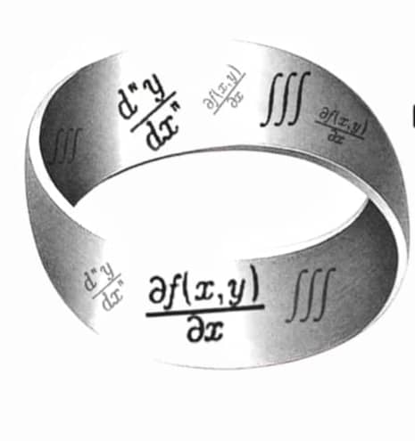
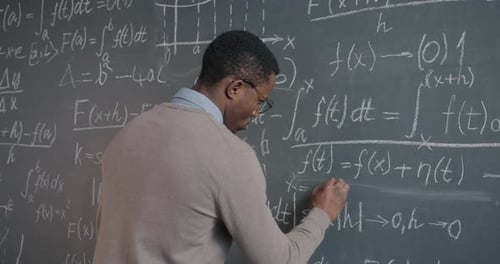

The Mathsters Alliance Maths Contest (TMA MC) is an independent initiative designed to be the premier arena for mathematical excellence within the University of Ibadan. Founded to bridge the gap between academic theory and competitive problem-solving.
The Mathsters Alliance challenges the sharpest analytical minds to apply advanced calculus with speed, elegance, and absolute precision. The contest is open to freshman and sophomore students across all departments in the University, categorised into two competitive tracks; TMA C-100 and TMA C-200.

The TMA C-100 series is dedicated to establishing foundational rigor for high-achieving freshman(100L) students.
The contest is structured as a three-tier progression, where participants must navigate a qualifying round,a semi-final round and a Grand Finale.
The qualifying round comprises 50 multiple choice questions designed to test breadth and speed. The semifinal round features 30 multiple choice questions supplemented by a 5-part theory section.
The Grand finale reaches the peak of rigor, consisting of a comprehensive 6-part written examination focused on complex derivations and proofs.
The content covers topics such as real-valued functions of a real variable,trigonometric and hyperbolic functions, limits and continuity, expansion of functions, calculus, differentiation, integration and their application.
The TMA C-200 Series is designed for 200l students with emphasis on intermediate and advanced analytical techniques in calculus. Just like the C-100 series, the C-200 series is structured as a three-tier progressoon, where participants must navigate a qualifying round, a semiifinal round and a Grand finale.
The qualifying round also comprises 50 multiple-choice questions designed to test breadth and speed.
The semifinal round features 30 multiple choice questions supplemented by a 5-part theory section.
The Grand finale reaches the peak of rigor, consisting of a comprehensive 6-part written examination focused on complex derivations and proofs.
The content covers topics such as basic concept of Ordinary Differential Equation(ODE),special types of differential equations of the first order,linear differential equations of order greater than one, operators and Laplace transformations, systems of differential equations: Linearization of first order systems, series method, existence and uniqueness theorem for the first order differential equation y'=f(x,y). Picard's method, envelopes, clairaut equation, existence and uniqueness theorem for a system of first order differential equations and for linear and non-linear differential equations of other greater than one. Wronskians, advanced ordinary differential equations and special functions, difference equations, problems leading to differential equations of the first and second order.